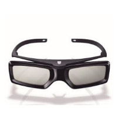

9899,00 zł
6099,00 zł
KINA DOMOWE, BLU...
HIFI AUDIO
DROBNY SPRZĘT
SŁUCHAWKI
AKCESORIA RTV
To jak znaleźć się we wnętrzu fali, czekając aż woda załamie się wokół procesor obrazu 4K HDR Procesor X1 odtwarza drobne wzory i tekstury z niezwykym realizmem.
W celu zapewnienia najwyższej jakości obrazu, telewizor łączy wyrazistość 4K z jasnością, kolorami i sczegółowością technologii High Dynamic Range (HDR). Wcześniej ukryte obszary są teraz wyraziste i pełne szczegółów.
Odkryj żywe, realistyczne kolory dookoła. Wyświetlacze TRILUMINOS Display korzystają z szerszej palety barw, zapewniając wierne odwzorowanie barwi i cieni.
Odkrywaj rozrywkę, o której marzysz, przy użyciu sów. Dzięki zaawansowanym funkcjom sterowania głosem
ten ten telewizor 4K Android TV pozwala szybko odnajdywać filmy i programy telewizyjne przy użyciu aplikacji
lub sygnału telewizyjnego.